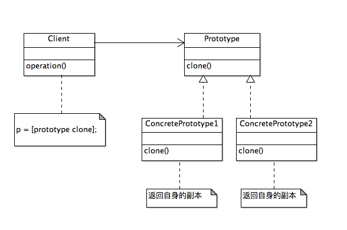
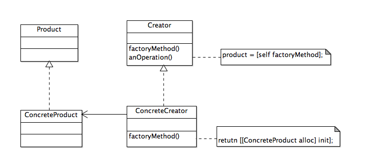
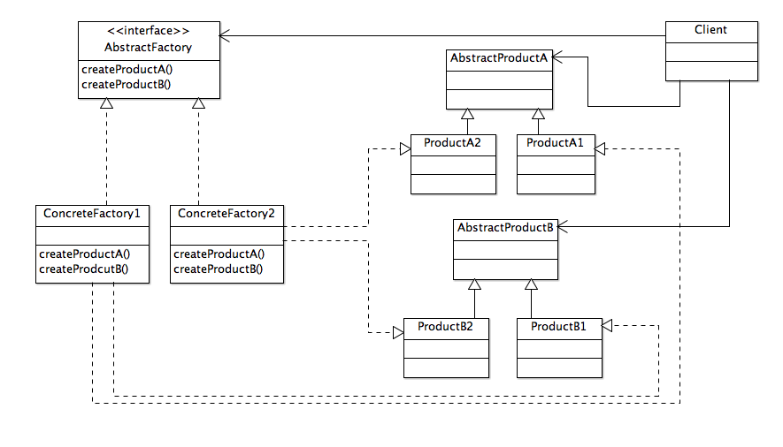
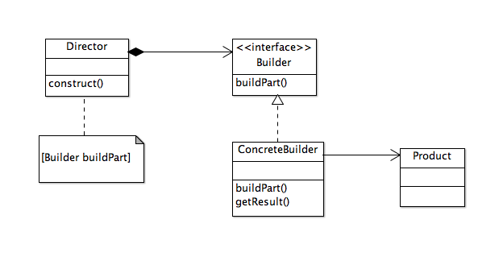
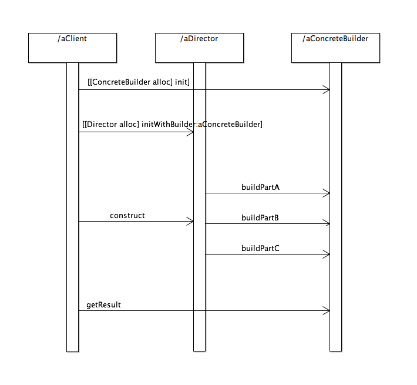

《iOS设计模式解析》笔记1：原型模式、工厂方法、抽象工厂、生成器模式
原型模式
应用于“复制”操作的模式
使用情景
- 需要创建的对象应独立于其类型与创建方式
- 要实例化的类是在运行时决定的
- 不想要与产品层次相对应的工厂层次
- 不同类的实例间的差异仅是状态的若干组合，因此复制相应数量的原型比手工实现更加方便
- 类不容易创建，比如每个组件可把其他组件作为子节点的组合对象。复制已有的组合对象并对副本进行修改会更加容易

工厂方法
工厂方法也称为虚构造器。适用情况：一个类无法预期需要生成哪个类的对象，想让其子类来指定所生成的对象。
使用情景
- 编译时无法准确预期要创建的对象的类
- 类想让其子类决定在运行时创建什么
- 类有若干辅助为其子类，而你想将返回哪个子类这一信息局部化
与直接创建新的对象相比，使用工厂方法创建对象可算作一种最佳的做法。工厂方法模式让客户程序可以要求由工厂方法创建的对象拥有一组共同的行为。所以往类层次结构中引入新的具体产品并不需要修改客户端代码，国为返回的任何具体对象的接口都跟客户端一直在用的从前的接口相用。

抽象工厂
提供一个创建一系列相关或相互依赖对象的接口，而无需指定它们的具体的类。
抽象工厂与工厂方法的对比
| 抽象工厂 | 工厂方法 |
|---|---|
| 通过对象组合创建抽象产品 | 通过类继承创建抽象产品 |
| 通过对象组合创建抽象产品 | 通过类继承创建抽象产品 |
| 必须修改父类的接口才能支持新的产品 | 子类化创建者并重载工厂方法以创建新产品 |
黄金法则：变动需要抽象。
当现有的抽象工厂需要支持新的产品时，需要向父类添加相应的新工厂方法。这意味着也要修改其子类以支持新产品的新工厂方法。

生成器模式
将一个复杂对象的构建与它的表现分离，使得同样的构建过程可以创建不同的表现。
使用情景
- 需要创建涉及各种部件的复杂对象。创建对象的算法应该独立于部件的装配方式。常见例子是构建组合对象
- 构建过程需要以不同的方式(例如，部件或表现的不同组合)构建对象
生成器与抽象工厂的对比
| 生成器 | 抽象工厂 |
|---|---|
| 构建复杂对象 | 构造简单或复杂对象 |
| 以多个步骤构建对象 | 以单一步骤构建对象 |
| 以多种方式构建对象 | 以单一方式构建对象 |
| 在构建过程的最后一步返回产品 | 立刻返回产品 |
| 专注一个特定产品 | 强调一套产品 |
aClient要从aBuilder得到产品，需要知道aDirector和aBuilder。你可能想知道，如果让aDirector从它的construct方式返回产品，或getRusult以某种方式在aDirector中实现，是否aClient可以不必知道aBuilder，那样的话，aDirector就变成了工厂，它的construct方法就变成了返回抽象产品的工厂。而且，aDirector将与所有支持的产品固定在一起，这降低了模式的可复用性。整体思想是分离“什么”与“如何”，使得aDirector能把同一个“什么”(规格)应用到不同的aBuilder，而它懂得“如何”按照给定的规格建造自己特定产品，反之亦然。

